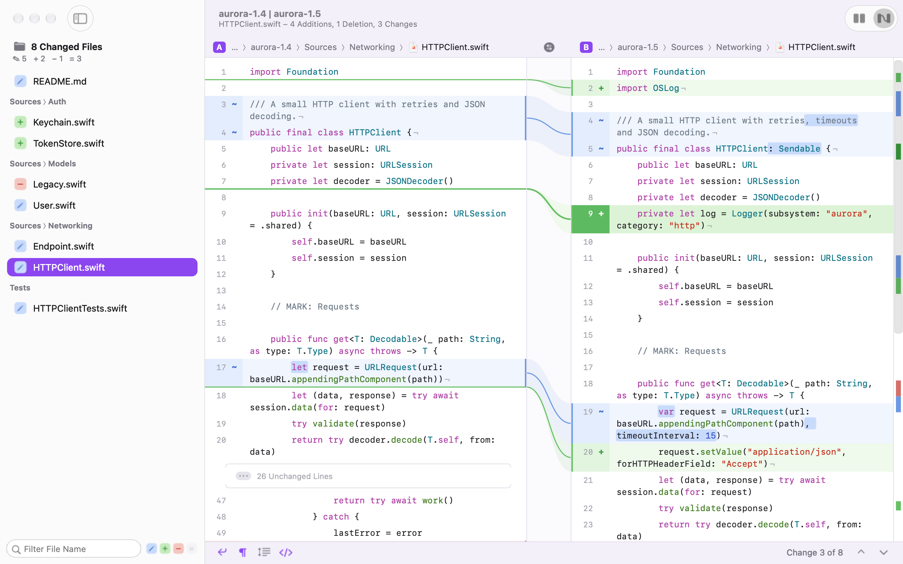
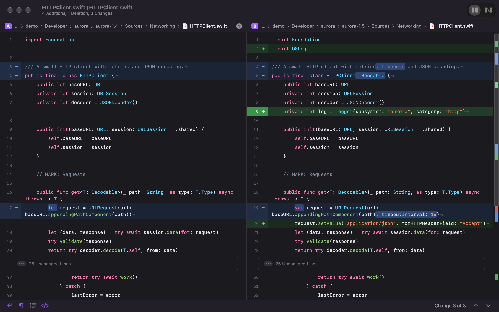
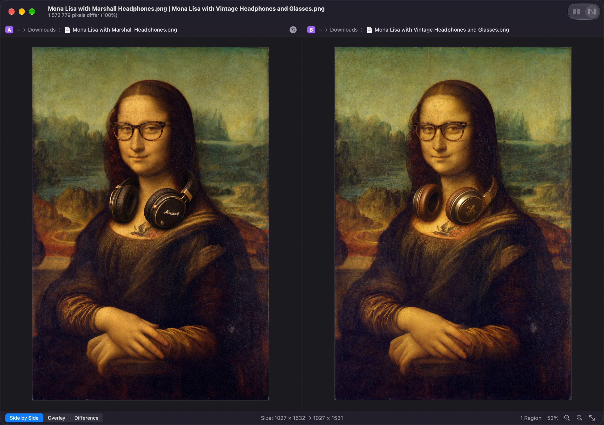
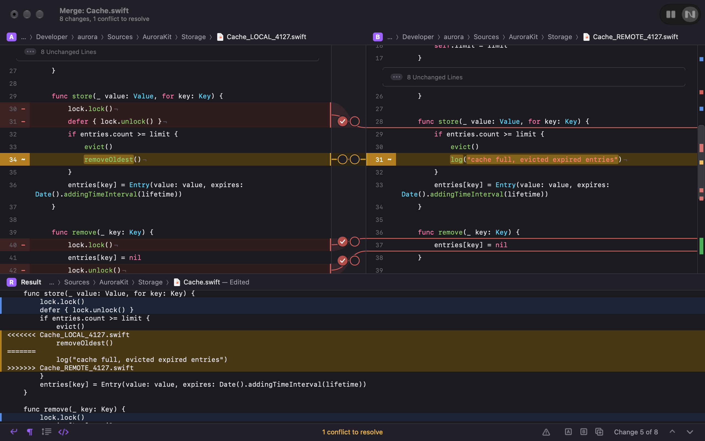
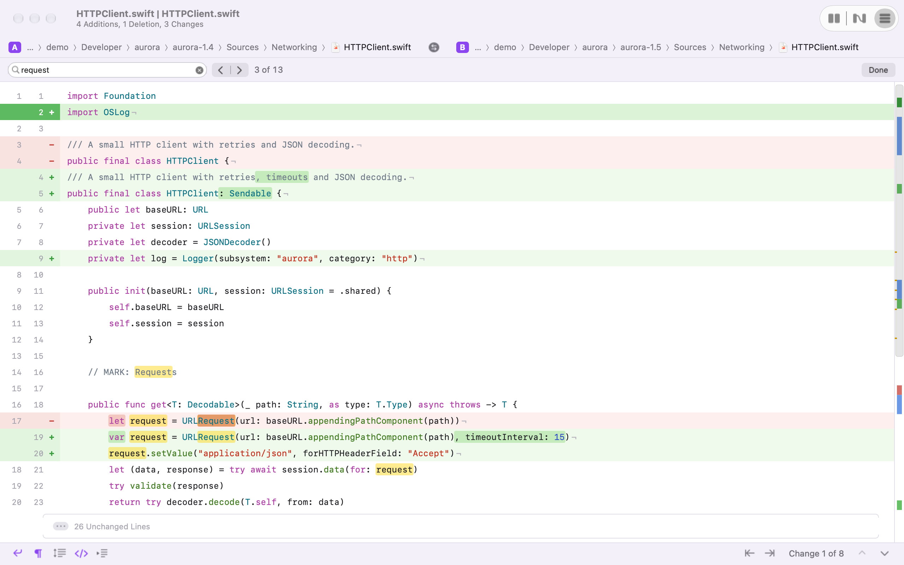
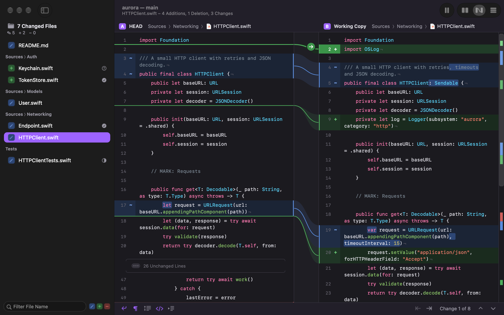

Free & open source · No subscription. Ever.
The prettiest diff
on your Mac.
Free forever.
Twofold is a native macOS app for comparing files and folders. It's gorgeous, it's fast, and it's yours to keep: GPL licensed, no account, no telemetry, no dependencies, and no monthly bill for looking at two text files.
macOS 26 or later · Apple silicon & Intel · Completely free and open source, GPLv3

You bought it once.
That should be the end of it.
Somewhere along the way, diff tools started renting you your own screen. Pay up front, then pay again every month, or watch the app you already paid for get left behind on the next macOS release.
That's absurd. Comparing two files is not a service. Twofold is free, open source and builds from a single command. Nobody can put it behind a paywall, switch off your license, or email you a renewal reminder. Not even us.
Free today, free tomorrow, free after the next macOS update.
Pure Swift and AppKit. Nothing to download, nothing to break.
No sign-in, no telemetry, no license server phoning home.
Zero subscriptions. Zero dependencies. Zero greedy asshats.
Made for looking at changes.
Every pixel is drawn natively with Core Text. No web view, no Electron, no lag.
Fluid layout
Changes on each side are joined by curves through the middle, and both sides glide so the change you're reading stays lined up. No filler lines.
Blocks layout
Prefer the classic look? Matching lines sit on the same row and both panes scroll together. Switch with ⌘1 and ⌘2.
Word-level highlights
See exactly what changed inside a line, down to the characters when only part of a word moved.
Folder comparison
Compare whole directories. Changed, added and removed files stream into a tidy sidebar while the comparison runs in parallel.
Absurdly fast
Diffs 100,000 lines in under 60 ms, scrolls at 120 Hz, and compares 10,000 files per side in about a second.
Light & dark
Two hand-tuned themes that follow your system, or pick one yourself. Switching cross-fades, because why not.






- ✓ Image diff: side by side, overlay and pixel difference
- ✓ Syntax highlighting for 29 languages and formats
- ✓ Copy changes across, undo, and save
- ✓ Edit in place: type, paste and delete in either pane
- ✓ Three-way merge for git conflicts
- ✓ Live view of a repository's uncommitted changes
- ✓ Unified layout: both files in one column
- ✓ Find in both files with ⌘F
- ✓ Ignore whitespace when indentation is all that changed
- ✓ Unchanged runs fold away; click to expand
- ✓ Soft wrapping and visible line endings
- ✓ Overview strip with every change at a glance
- ✓ Animated next / previous change with ⌘↓ and ⌘↑
- ✓ Reloads automatically when files change on disk
- ✓ Works as
git difftoolandgit mergetool - ✓ UTF-8, UTF-16 and Latin-1, any line endings
- ✓ Drop two files on the Dock icon and go
The Kaleidoscope alternative
you don't have to rent.
There are plenty of diff tools for the Mac. Only one is native, beautiful, open source and free.
| Twofold | Kaleidoscope | Beyond Compare | FileMerge | Meld | P4Merge | |
|---|---|---|---|---|---|---|
| Price | Free and open source |
Subscription | Paid license | Free with Xcode | Free | Free |
| Native macOS app | ● Yes | ● Yes | Cross-platform UI | ● Yes | GTK | Qt |
| Open source | ● GPLv3 | No | No | No | ● GPL | No |
| No account or license key | ● Yes | No | No | ● Yes | ● Yes | ● Yes |
| Folder comparison | ● Yes | ● Yes | ● Yes | ● Yes | ● Yes | No |
| Merge & edit | ● Yes | ● Yes | ● Yes | ● Yes | ● Yes | ● Yes |
| Actually pretty | ● Very | ● Yes | Functional | Dated | Functional | Dated |
Kaleidoscope, Beyond Compare, FileMerge, Meld and P4Merge are trademarks of their respective owners. Pricing and features as we understand them; check each vendor for current details. "Actually pretty" is our opinion, and we stand by it.
Side by side in detail: Kaleidoscope · Beyond Compare · FileMerge · Meld
Small on purpose.
Twofold isn't trying to be a git client or a do-everything merge suite. It does one thing: shows you what changed between two files or two folders, beautifully and instantly. It's a lightweight tool you'll actually enjoy opening. You can fix what you see right there: edit either side, copy changes across, and save.
Completely free.
Completely open source.
One app with every feature in it. No paid version, no trial, nothing locked.
Twofold
- ✓ Every feature, with no subscription, account or license key
- ✓ Download a release, or build it with
make start - ✓ Command line tool,
git difftoolandgit mergetool - ✓ All source code on GitHub under the GPLv3, so it stays free
Official builds come only from this project's GitHub releases. If you see Twofold for sale anywhere, it isn't us.
Roadmap
Version 1: shipped
File and folder comparison, Fluid and Blocks layouts, light and dark themes, git difftool.
Image diff: shipped
Side by side, overlay and pixel difference views.
Syntax highlighting: shipped
Language-aware colours on top of the change colours.
Copy changes & save: shipped
Copy a change to the other side, undo, and save without touching the rest of the file.
Edit in place: shipped
Type, paste and delete in either pane.
Three-way merge: shipped
Resolve git conflicts as git mergetool.
Unified layout, ignore whitespace, find: shipped
Both files in one column, a switch that sets indentation changes aside, and ⌘F across both files.
Live working copy changes: shipped
Everything you have not committed yet, in one window that keeps up while you work.
New start window: shipped
Drop two files and go. Recents, Git setup and what’s new are one click away.
Automatic updates: planned
New versions straight from GitHub releases. Optional, and off until you turn it on.
Get it.
Download a release, or build it yourself. All you need is macOS 26 and the Xcode Command Line Tools.
git clone https://github.com/veturi/twofold.git
cd twofold
make starttwofold commandmake install
twofold old.swift new.swiftOpen Twofold and choose Twofold › Git Integration…. Turn on Diff tool for git difftool and Merge tool for git mergetool. Twofold writes the settings to your global Git configuration, and turning a switch off removes them. The commands below do the same by hand.
git config --global diff.tool twofold
git config --global difftool.twofold.cmd 'twofold --wait "$LOCAL" "$REMOTE"'
git config --global difftool.prompt falsegit config --global merge.tool twofold
git config --global mergetool.twofold.cmd 'twofold --wait --base "$BASE" --output "$MERGED" "$LOCAL" "$REMOTE"'
git config --global mergetool.twofold.trustExitCode falseQuestions
Is Twofold really free?
Yes. Twofold is free and open source under the GPLv3, with no subscription, account or license key. There is no paid version and nothing is locked: every feature is in the one app, and all of its source code is public.
Which Macs does Twofold run on?
macOS 26 or later, natively on both Apple silicon and Intel.
Can Twofold compare folders?
Yes. Open two folders and Twofold lists every changed, added and removed file in a sidebar grouped by directory, streaming results while the comparison runs in parallel. Select a file to see its diff.
Does Twofold have syntax highlighting?
Yes. Code is coloured by language on top of the change colours, for 29 languages and formats including Swift, C and C++, JavaScript and TypeScript, Python, Go, Rust, HTML, CSS, JSON, YAML and Markdown. The language is picked from the file name, and you can switch the colours off with Option-Command-Y.
Can Twofold compare images?
Yes. Open two images, or select one in a folder comparison, and Twofold shows them side by side, as an overlay you can fade from one version to the other, or as a difference view that highlights every changed pixel and outlines each changed region. It reads PNG, JPEG, HEIC, TIFF, GIF, WebP and the other formats macOS can decode.
How do I use Twofold as my git difftool?
Open Twofold, choose Twofold › Git Integration… and turn on Diff tool. Twofold writes the settings to your global Git configuration for you. To set it up by hand instead, install the twofold command with make install, then run the three git config lines in Get it. Use git difftool --dir-diff to compare whole trees in one window.
Can Twofold merge or edit files?
Yes. You can type, paste and delete in either pane, copy any change from one side to the other, undo, and save; the rest of the file is written back exactly as it was. Twofold also does three-way merges and works as git mergetool for resolving conflicts.
How do I use Twofold as my git mergetool?
Open Twofold, choose Twofold › Git Integration… and turn on Merge tool. Twofold writes the settings to your global Git configuration for you. To set it up by hand instead, install the twofold command with make install, then run the three git config lines for the mergetool in Get it. After a conflict, git mergetool opens each conflicted file with your version and theirs side by side and the result below. Changes only one side made are already merged; pick a side for each conflict or edit the result, then save and close the window.
Can Twofold show my uncommitted Git changes?
Yes. Run twofold . in a repository, or choose File › Open Repository…, and Twofold lists every file that differs from the last commit, untracked files included, and compares the committed version with your working copy. The window updates by itself as files are edited, staged, committed or reverted, so you can leave it open while you or a coding agent work. You can pause the updates to study one state.
Is Twofold a good Kaleidoscope alternative?
Yes, for most people. Twofold is native, polished and free, while Kaleidoscope is sold as a subscription. Twofold compares text, images and folders, edits files, and resolves git conflicts with a three-way merge. Kaleidoscope's merge tools are older and more complete. The full comparison.
Does Twofold collect any data?
No. The app has no telemetry, no account and no license server. It never sends your files anywhere.
Why does macOS warn me when I first open Twofold?
GitHub release builds aren't notarized by Apple yet. Open the app once, then go to System Settings → Privacy & Security and click Open Anyway. You only need to do this once.